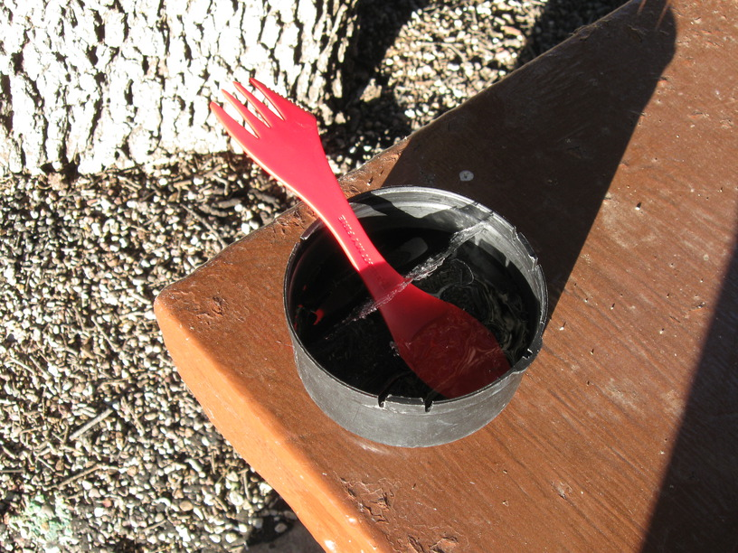
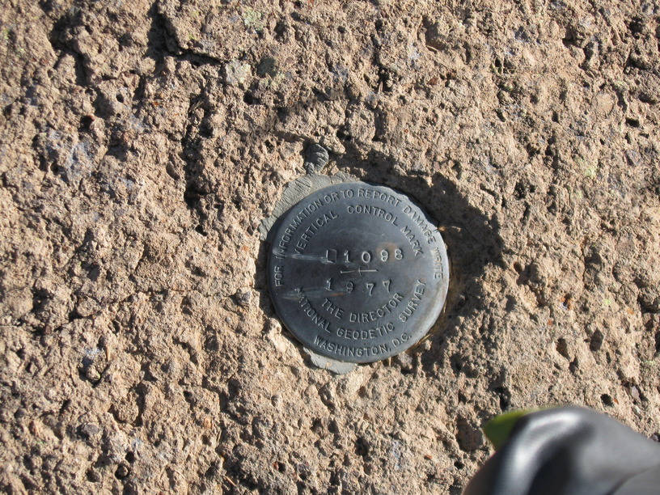
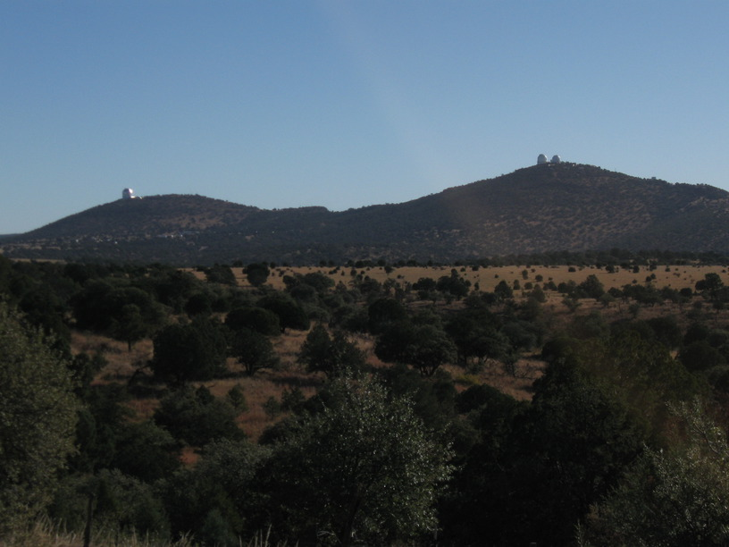
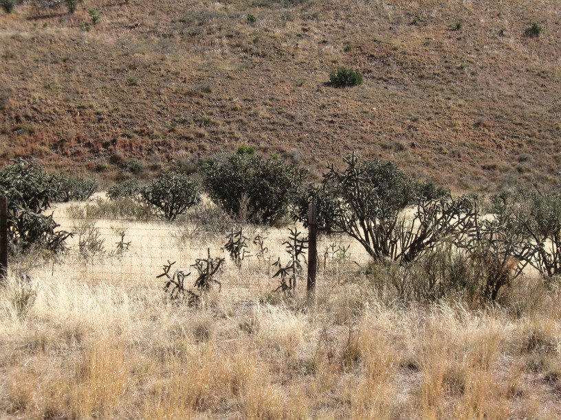

15 Nov 2008, Van Horn, TX
Last night was cold. I had a partly-frozen water bottle this morning & when I went to make cereal the water froze across the surface. The cold slowed my start—I climbed back into my warm sleeping bag twice. The late start didn't slow me down too much, though—I still made it 75 miles to Van Horn, which is where I was heading for. Riding on I-10 shoulder was not all that different than many other roads in TX, especially east TX where there was more traffic.
Paralleling the trains is fun—they definitely go faster, but not always by much, so it feels like a race.
In a motel tonight—it was only a few bucks more expensive than camping, & I should be able to get an early start tomorrow. Of course, I ended up wasting time watching Die Another Day on TV, which I'd never seen before. So it's bedtime now.



